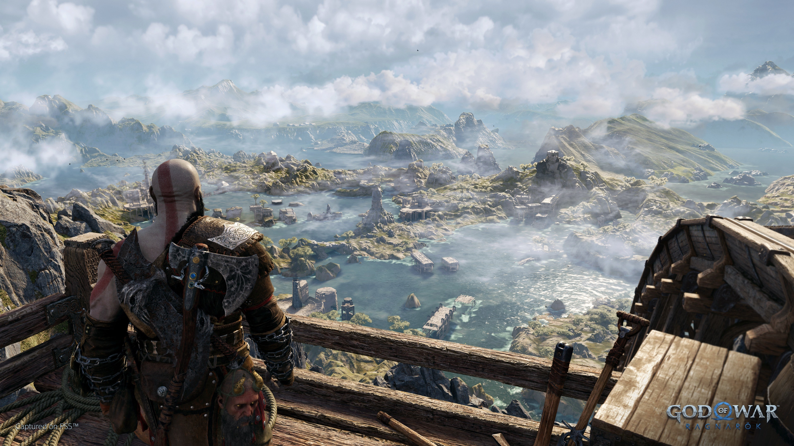

God of War
Ragnarök
By Argeniz september 10, 2025

Plot
Near the end of Fimbulwinter, Kratos and Atreus return home—fending off an ambush from a vengeful Freya—to find their wolf Fenrir as he dies. Atreus's grief transforms him into a bear and he battles Kratos before returning to his senses. Thor arrives with Odin, who proposes leaving them alone and keeping Freya away if Atreus abandons searching for Týr. Kratos refuses, dueling Thor to a stalemate. Odin tells Atreus he will leave Kratos alone if the former comes to Asgard. Kratos, Atreus, and Mímir take refuge at Sindri's home on a branch of Yggdrasil and rescue a pacifistic Týr in Svartalfheim. At Gróa's shrine in Alfheim, they learn only Asgard is fated for destruction while other realms survive under a new champion, implied to be Atreus as Loki. Kratos and Atreus argue over the latter's supposed destiny.
Atreus is transported to Jötunheim. He meets Angrboda, who shows him a mural seemingly foretelling Kratos's death in Ragnarök and Atreus serving Odin. Sworn to secrecy, Atreus is entrusted with spiritual stones containing Giants' souls, putting one into a snake's body, before returning to Midgard. Freya attacks but relents, agreeing to spare Kratos if he breaks the curse binding her to Midgard, which she temporarily circumvents by transforming into a falcon. In Vanaheim, Kratos opens up to Freya about his family's deaths in Greece, his vengeance against Olympus, and the emptiness of revenge. After breaking the curse, Freya and Kratos make amends.
Setting
Ragnarök is set in the world of Norse mythology, taking place three years after the previous game. Unlike that prior entry, all nine realms of Norse mythology are visited as part of the story. Midgard is the primary realm which has become a frigid wasteland, dramatically changed by Fimbulwinter, a three-year long winter that began upon the conclusion of the previous game. The Lake of the Nine, previously navigable by means of a boat, is now frozen over, with Kratos making use of a sleigh and two pet wolves to navigate around the area. The other returning realms include Alfheim, the mystical home of the dark and light Elves; Helheim, the icy land of the dead; Jötunheim, the land of the Giants; the fiery realm Muspelheim, and the fog realm Niflheim, now covered with ice and snow—the latter two were previously optional to explore. The three new realms for Ragnarök include Svartalfheim, the industrial abode of the Dwarves; Vanaheim, the lush home of the Vanir gods as well as the giant wolves Sköll and Hati; and Asgard, the humble home of the Aesir gods that is only visited as part of the story and cannot be accessed after its conclusion. The DLC pack Valhalla adds Valhalla, a remaining area within Asgard where warriors go after death. Within Valhalla are small recreations of the previous realms based on Kratos's memories, as well as areas from his homeland of Greece.
Valhalla

Sometime after the end of Ragnarök, Kratos receives an anonymous invitation to Valhalla; he and Mímir force their way through its entrance. Kratos's equipment and magical powers are stripped away and he is defeated in combat. Awakening on the shores outside the entrance, Kratos and Mímir are confronted by Freya and Sigrun. Freya, now Queen of the Realms, had invited Kratos to join her council as the new God of War but he refused, reluctant to wield such power again after abusing it in Greece.